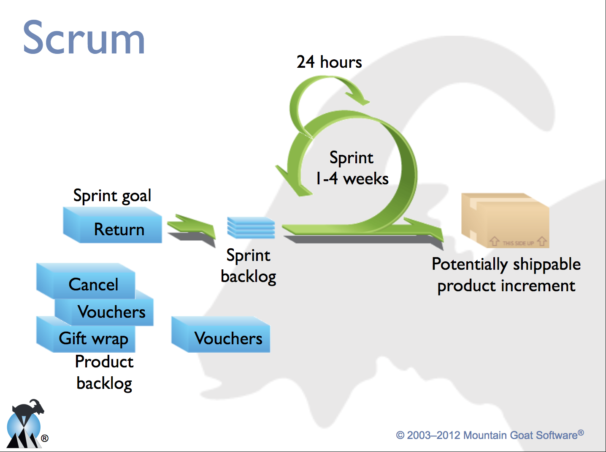
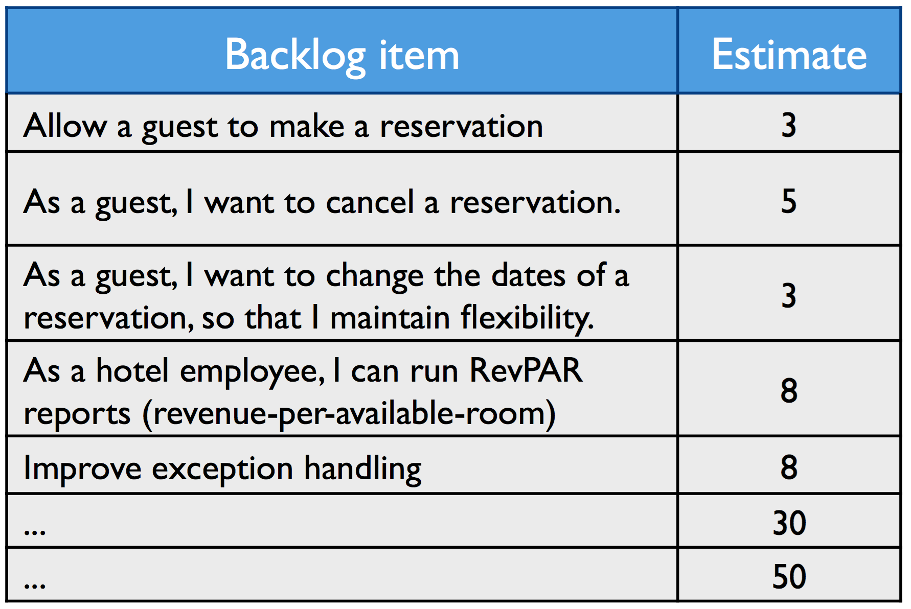
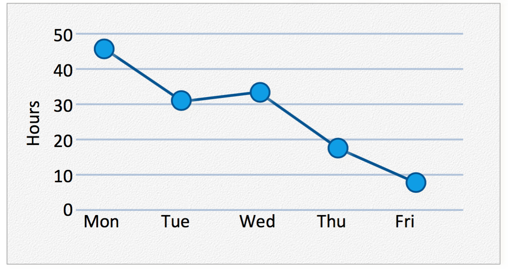

SE Ethics
SI401 - Proceso de Desarrollo de Software
Sprint 0 - Lecture 2
CETYS
José A. Zamudio
pepeazb@gmail.com
Scrum

Taken from https://www.mountaingoatsoftware.com/

Taken from https://www.mountaingoatsoftware.com/

Taken from https://www.mountaingoatsoftware.com/
A new practice approaching!!!